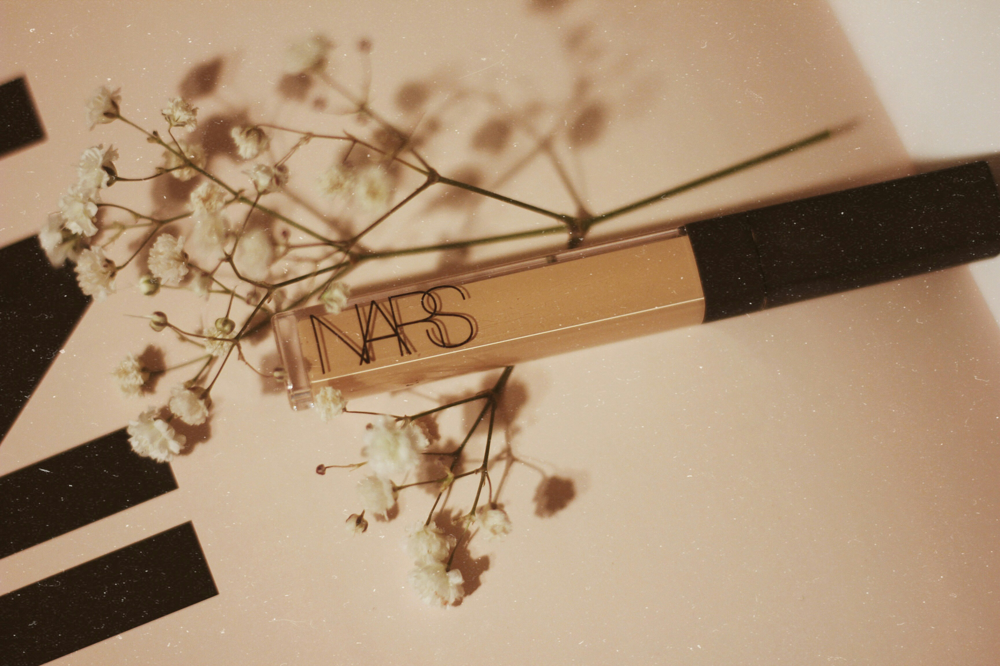
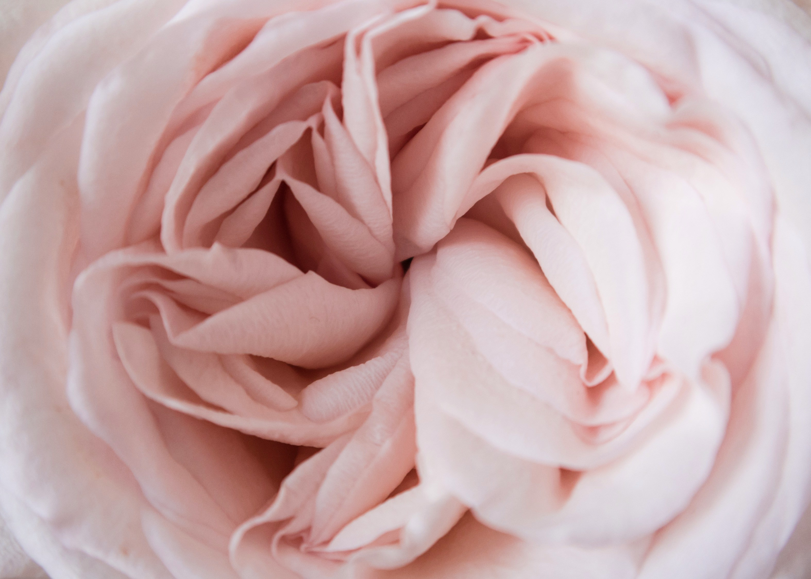
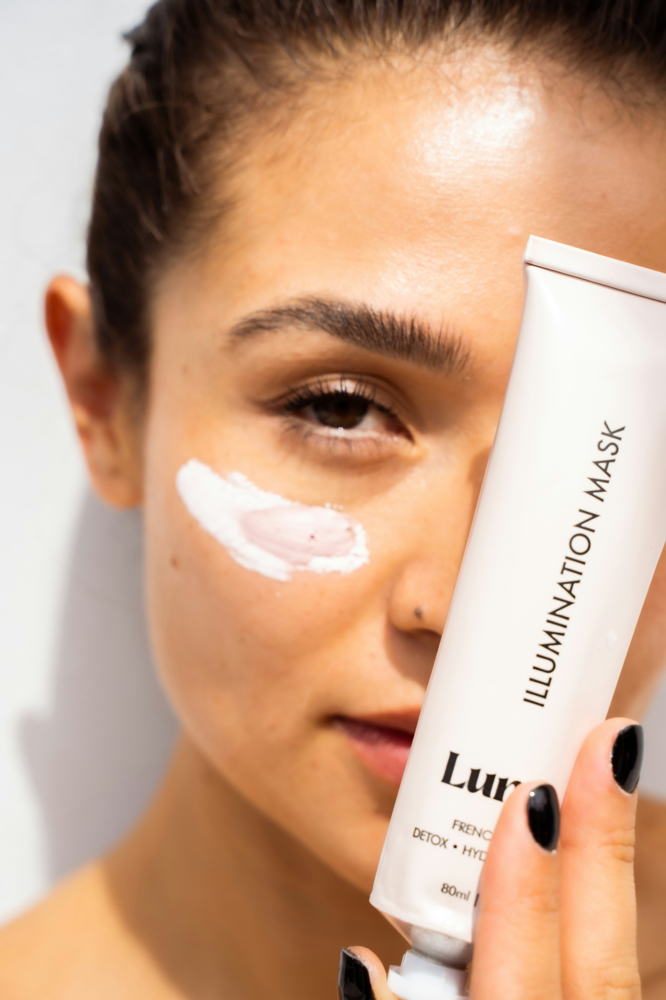

-
Cleanser
Make sure your face is clean for a smooth base.

-
Sunscreen
SPF is so important so make sure this is implemented before the start of makeup routine.
-
Primer
Hide those pores! Give your makeup a smooth base to work with.
-
Foundation
This can be any coverage you desire, if you want a sheer natural look go with a foundation that is light coverage, a medium coverage look is in between and will still help hide imperfections. A full coverage look will give you a filtered look.

-
Eyebrows
If eyebrows are delicate, it is your best interest to fill them in and shape them. If fuller and thicker brows, stick to a brow gel!
-
Concealer
Brighten your under eyes and place light patches of concealer on any imperfections you desire to cover, then blend in.
 -
Cream Bronzer
Give your face a bronzy glowing look and carve out features such as your nose, cheekbones, jawline and even outline of your lips.
-
Cream Blush
Apply a couple of dots of apples of cheeks and one dot on your nose.
 -
Cream Highlighter
Highlight the highest points of your face such as your cheekbones, nose, under your brows, cupids bow of lips and inner corner of your eyes.
-
Translucent powder
Powdering your face is very important to make sure your makeup doesn’t melt away.

-
Mascara
Curl your lashes before application and then curl again once finished.

-
Powdered Bronzer
Go over the places you applied the cream bronzer.

-
Powdered Blush
Apply in the same places as cream blush.
-
Powdered Highlighter
Apply in the same places as cream highlighter.
-
Lip Liner
Line the outside of your lips to create a fuller look.
-
Lipstick
Choose a desired colour and fill in your lips.
-
Lip Gloss
Lip gloss can create shiny and glossy lips, if a matte look is preferred, skip this part.

-
Setting spray
Last but not least, set your makeup in place but spraying a few pumps of setting spray over your face.

Our Care!
After a long day, it’s very important to take care of your skin, A simpler skincare routine works better than a complicated one!
-
Cleanser
Remove all makeup and make sure your face is bare to soak all the next products!
-
Treatment
Using a treatment can help remove blemishes, personally our favourite is using benzoyl peroxide, whereas some may prefer salicylic acid.

-
Moisturizer
Make sure you moisturize to lock in moisture and avoid wrinkles! Don’t forget your neck!
-
Night Mask
This is optional but if wanting shiny, glass-like skin, opt for a sleep mask to wake up with beautiful skin! Our personal favourite is a collagen mask!
